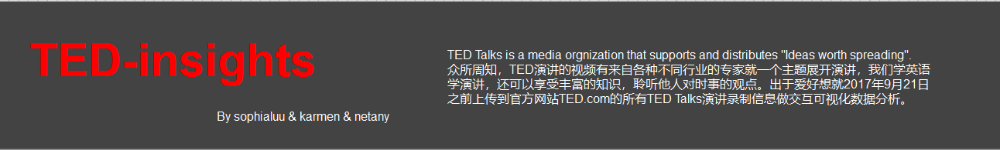

研究背景：TED由Richard Saulman创立于1984年，是一家旨在将技术(technology)，娱乐(entertainment)和设计(design)领域的专家聚集在一起的非盈利组织。Ted的口号是"Ideas worth spreading"，也就是“值得传播的思想”。主要研究数据集其中包含了2017年9月21日之前上传到官方网站TED.com的所有TED Talks演讲录制信息。